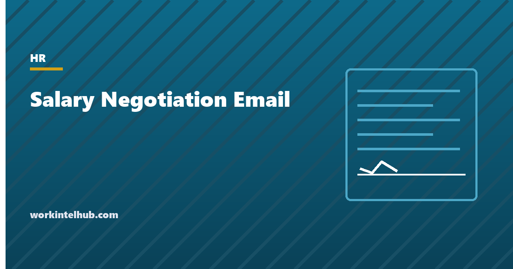

Salary Negotiation Email

A salary negotiation email asks for a specific number, gives the reason it is justified, and keeps the relationship warm. That is the whole formula, and most negotiation emails break it in one of three ways: no number ("I was hoping for something higher"), no reason (or the wrong one: need rather than market), or a tone that treats the recipient as an opponent. The generator below writes the email for a job offer, a raise request, a counter-offer decision and an acceptance, with the four elements in the right order.
The rest of the page covers where to get the number, the 2026 context on raises and ranges, the elements in detail, the mistakes that cost people money, and the counter-offer question that most people decide badly.
Salary negotiation email generator
Nothing typed here leaves your browser. The email asks for a specific number, gives the market evidence, states the value in one line and stays warm about the role, which is the combination that gets a yes or a serious counter.
Getting the number
The number comes from the market, not from what you need or what you earned before. Fourteen states and the District of Columbia now require pay ranges in job postings, so for most roles the range at comparable employers is public; our pay transparency page lists the states, and a search for the same title at three or four comparable companies produces the range in an evening. Take the midpoint of the ranges as the anchor and adjust for the company's size, the city and your experience. Aim above the midpoint if the role is a stretch for the employer to fill and at it otherwise.
Two numbers frame a raise request. Mercer reports employers budgeted about 3.5 per cent for total increases in 2026, with 3.3 per cent for merit, so a request inside that band is an ordinary raise and a request well above it is a market adjustment, which needs market evidence. And inflation to August 2026 was 3.4 per cent, so a "raise" at the budget average is roughly flat in real terms; the pay raise calculator shows the real figure and the per-paycheck change.
Ask for a specific figure, not a range. A range invites the bottom of it. Ask for about 10 to 15 per cent above what you would accept on an offer, since the employer will usually meet part of the way, and for the market number on a raise, since the manager has to defend it to someone.
The four elements
- Warmth about the role. First sentence. You want the job or you value the one you have, and the negotiation is about making it work. This is not decoration; it is what stops the recipient reading the rest defensively.
- The number. A single figure, stated as base salary, in the second paragraph. "I would like to propose $86,000."
- The reason, in two parts. The market (posted ranges, survey data, what comparable roles pay) and the value (what you have done, with one measurable result, or what you will bring). Need, cost of living, a partner's opinion and what a colleague earns are not reasons the recipient can act on.
- A fallback and an open door. If base cannot move: a signing bonus, a dated review with a target, extra leave, a title. And an offer to talk by phone, which is where most of these are settled.
Keep it under 200 words. Attach the market evidence rather than pasting it. Send it after the offer is in writing and before you accept anything, or for a raise, before the budget is set for the year, which for most employers means late summer.
The mistakes that lose
- Negotiating before the offer. Discussing pay before the employer has decided to hire you is answering a screening question. Give a range from the posting if asked; negotiate the number once the offer exists.
- Volunteering salary history. Banned as a question in about twenty states; there is no reason to offer it. "I am focused on the market rate for this role" is the answer.
- Apologising. "I hate to ask, but". Negotiation is expected; recruiters report that most candidates who ask get something.
- Ultimatums you will not keep. "I cannot accept less than $90,000" from someone who will accept $84,000 costs credibility if the employer says no.
- Negotiating everything at once. Base first. Then, if base is fixed, one or two alternatives. A list of eight demands reads as a candidate who will be difficult.
- Accepting a verbal number. Nothing has changed until the offer letter or a written confirmation says so.
- Going quiet. An employer that says no and hears nothing assumes the candidate is gone. Reply, decide, and say which way.
The counter-offer question
When you resign and your employer counters, the number is rarely the issue. People who accept counter-offers commonly leave within a year anyway, because whatever made them look, the manager, the work, the ceiling, is unchanged, and the employer now knows they were looking. The counter is also evidence about what the employer thought you were worth before you had leverage. That said, a counter that comes with a changed role, a new manager or a written promotion is a different offer and worth weighing on its terms.
The generator's counter-offer email covers both decisions. Whichever way it goes, get the new terms in writing before withdrawing a resignation, and if leaving, leave well: the resignation letter and the notice period are the reference. On the employer's side, the stay interview is the conversation that should have happened before the resignation, and the HR metrics page explains why regretted turnover costs more than the counter-offer would have.
Key takeaways
- Ask for a specific number, give the market reason and one line of value, stay warm about the role, and offer a fallback and a phone call. Under 200 words.
- The number comes from posted ranges at comparable employers, which pay transparency laws now make public in fourteen states and DC.
- Employers budgeted about 3.5 per cent for 2026 raises against 3.4 per cent inflation; a raise above that needs market evidence, not need.
- Never volunteer salary history, apologise for asking, or make an ultimatum you will not keep. Negotiate base first, then one alternative.
- Nothing has changed until it is in writing.
- Counter-offers rarely fix the reason someone was looking; weigh a changed role, not a changed number.
Frequently asked questions
How do you write a salary negotiation email?
Open with enthusiasm for the role, state the specific base salary you are asking for, give two reasons the employer can act on (the market rate from posted ranges or survey data, and what you bring with one measurable result), offer a fallback such as a signing bonus or a dated review if base cannot move, and invite a call. Keep it under 200 words and send it after the written offer and before accepting.
How much should I ask for when negotiating a job offer?
The market rate for the role, from posted ranges at comparable employers, adjusted for the company, city and your experience. Ask for a specific figure about 10 to 15 per cent above the amount you would accept, since employers usually meet part of the way. Fourteen states now require ranges in postings, so the data is usually available.
Is it okay to negotiate salary over email?
Yes, and it is often better: the ask is precise, the evidence is attached, and the recipient can take it to whoever approves pay. Offer a phone call in the email, because the final number is often settled in conversation, but put the ask and the reasons in writing first.
How do I ask my manager for a raise by email?
Request a meeting, state the figure you are asking for and the percentage, give the market evidence and what has changed in your role with one result, and attach a one-page summary. Send it before the annual budget is set, usually late summer, or after a visible result. If base cannot move, propose a dated review with a target.
What should I not say in a salary negotiation?
Your salary history, which is banned as a question in about twenty states and never helps; your personal expenses or needs; what a colleague earns; an apology for asking; or an ultimatum you will not keep. Give reasons the employer can act on: market data and results.
Should I accept a counter-offer from my current employer?
Usually only if it changes the role, the manager or the trajectory, not just the number. People who accept counters commonly leave within a year because the original reason for looking is unchanged, and the employer now knows they were looking. If you do accept, get the new terms in writing before withdrawing the resignation.